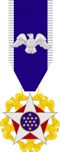
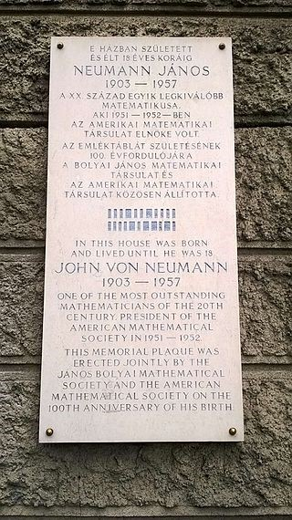
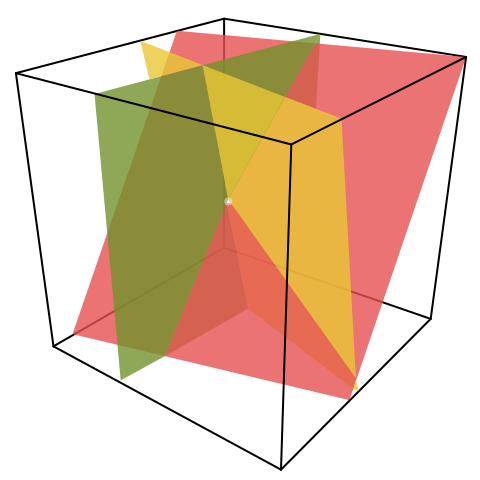
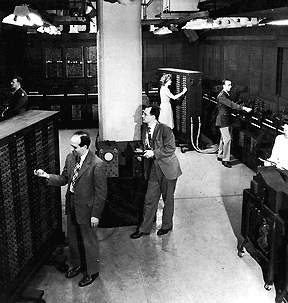
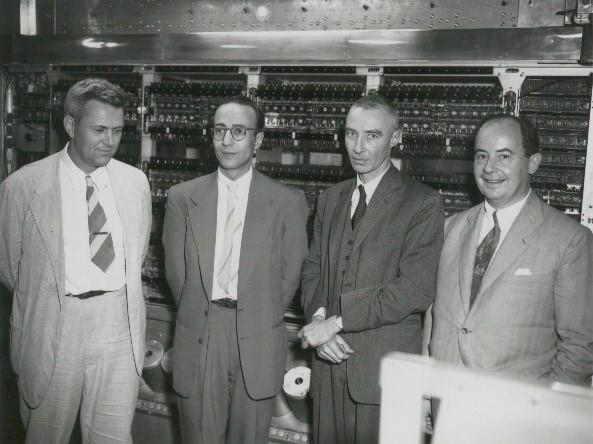
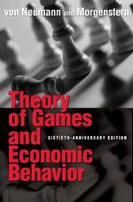

Neumann János (1903 - 1957)
Matematikus, matematikai fizikus, a számítógép-tudomány megteremtője, a halmazelmélet, a kvantummechanika, az atomenergia és a számítógép-tervezés lángelméje, a princetoni Institute of Advanced Study professzora, az amerikai Atomenergia Bizottság tagja, az Eötvös Társulat tiszteletbeli tagja.
Élete
1903. december 28-án született Budapesten, jómódú családból. Apja Neumann Miksa bankár, anyja Kann Margit. Két öccse született: Mihály (1907), chicagói orvos és Miklós (1911), philadelphiai jogász.
1909 és 1913 között járt elemi iskolába. 1913-tól a fasori főgimnáziumban tanult tovább. Ez volt abban az időben Magyarország legjobb középiskolája. Kitűnő képzést kapott történelemből, jogtudományból és közgazdaságtanból. Az 1917/18-as tanévben elnyerte az V. osztály legjobb matematikusa címet. Mire leérettségizett, már jól képzett matematikusnak számított. Matematikai tehetségét Rátz László fedezte fel. Egyetemi évei alatt Kürschák József, Fekete Mihály és Szegő Gábor segítették matematikatudásának továbbfejlesztésében.
Fiatal korától érdeklődött a repülés és a technika más újdonságai iránt is. Már ekkor gondolkodott kettes számrendszeren alapuló (bites) elektromos számítógép építésén. Mivel a matematika és a technika is érdekelte, párhuzamosan két egyetemet végzett. 1921. szeptember 14-én beiratkozott a budapesti tudományegyetem bölcsészkarára. Fő tárgya a matematika volt, melléktárgyai a fizika és a kémia. Doktori disszertációjának címe: Az általános halmazelmélet axiomatikus felépítése. Egyetemi évei alatt gyakran utazott Berlinbe, ahol Fritz Habernél kémiát, Albert Einsteinnél pedig statisztikus mechanikát hallgatott.
1926. március 13-án fogadták doktorrá. Szintén 1921-ben kezdte tanulmányait a berlini egyetemen. 1924-ben a zürichi Eidgenössische Technische Hochschulén folytatta tanulmányait. 1926 októberében szerezte meg vegyészmérnöki diplomáját. Ezután Göttingembe, a német matematika fellegvárába ment, ahol David Hilberttel dolgozott együtt. Itt tartotta meg első előadását 1926. december 7-én a társasjátékok elméletéről. 1927 áprilisában kért tanítási engedélyt a Friedrich Wilhelm Egyetemen, és december 13-án elfoglalhatta helyét az egyetem tanárai között.
1929-ben a Princeton University meghívta vendégprofesszornak. 1930 és 1933 között félévenként Amerikában, félévenként Európában tanított. Végül, amikor Németországban hatalomra jutott a fasizmus, letelepedett az Egyesült Államokban, ahol az Institute for Advanced Study tagja lett. 1937-ben kapta meg az amerikai állampolgárságot. Ekkor már elkerülhetetlennek látszott a világháború, ezért bekapcsolódott a nácizmus elleni katonai előkészületekbe. Részt vett az atomenergia kutatásában és háborús célú felhasználásában, majd a békés energiatermelés szolgálatába állításának irányításában is.
1945-től 1957-ig a princetoni Elektronikus Számítógép projekt igazgatója. Ekkor már az emberi agy, valamint az idegrendszer működését utánzó gépek kötötték le figyelmét. 1944-ben a pennsylvaniai egyetemen meghatározó módon járult hozzá az első teljesen elektronikus, digitális számítógép, az ENIAC (Electronic Integrator And Computer) megépítéséhez. Az ENIAC 1945-ben készült el teljesen.
1945 júliusában írta meg azt a művét, amelyben a "Neumann-elvek"-ként ismert megállapításait, valamint a számítástechnika, és a számítógépek általa elképzelt fejlődéséről olvashatott a világ. (A mű címe : First Draft of a Report on the Edvac).
A Neumann-elvek:
- teljesen elektronikus számítógép
- kettes számrendszer alkalmazása
- aritmetikai egység alkalmazása (univerzális Turing-gép)
- központi vezérlőegység alkalmazása
- belső program- és adattárolás
1945-ben a cambridge-i egyetemen (Anglia) elkészült az első elektronikus, tárolt programú számítógép, az EDSAC (Electronic Delay Storage Automatic Computer), mely már a "Neumann-elvek" alapján működött. A számítógép működéséhez a biológiát hívta segítségül: az emberi agy feladatmegoldásainak mintájára megalkotta az algoritmust, s az agyat vette alapul a számítógépben való számítások elvégzésének megvalósításához. Érdemeinek elismeréseképpen az Amerikai Egyesült Államok elnöke kinevezte az USA Atomenergetikai Bizottságának elnökévé. Érdeklődésének kialakulásában fontos szerepet játszott Ortvay Rudolf magyar tudós, akivel sokat levelezett. Neumann mondta: "a tudomány a jövőben inkább a szabályozás és vezérlés, programozás, adatfeldolgozás, kommunikáció, szervezés és rendszerek problémáival törődik majd". Felismerte: egy rendszer biztonságát, illetve hatékonyságát nem annyira az határozza meg, hogy milyen elemekből épül föl, hanem hogy hogyan van rendszerré szervezve, az elemek között milyen minőségű és mennyiségű információ megy át. Neumann János jól látta a fejlődés további irányát, de életművét már nem fejezhette be.
Hátralévő éveiben súlyos rákbetegségben szenvedett, amelyet egyes feltételezések szerint az atombomba kutatásának éveiben szerzett sugárszennyezés okozhatott. Utolsó művét 1956-ban, a számítógépekről írta.
1957. február 8-án halt meg Washingtonban, Amerikában.
Munkásságát a legmagasabb szinten is elismerték, halála előtt nem sokkal Eisenhower elnöktől megkapta a Presidential Medal of Freedom kitüntetést, azaz az elnöki Szabadság Emlékérmet.
Emlékét őrzi a Neumann János Számítógép-tudományi Társaság, a Holdon krátert neveztek el róla, több utca és iskola viseli a nevét. Budapesti szülőházán emléktábla hirdeti a magyar és az egyetemes tudománytörténet egyik legnagyobb alakjának nevét.
Kollégái nagy viccmesélőnek, vidám, társasági embernek ismerték, csodájára jártak széles műveltségének, hihetetlen memóriájának, fejszámoló készségének.
Gyakran idézett Thuküdiszésztől ógörögül, Voltaire-től pedig franciául. Egy máig élő legenda szerint az első számítógépek számításait ő maga ellenőrizte a géppel egy időben, fejben kalkulálva.
Híres találmányai
Kvantummechanika
Miután teljessé tette a halmazelmélet axiómarendszerét, Neumann nekiállt a kvantummechanika axiomatizálásához. Rögtön látta - 1926-ban - hogy a kvantumrendszer állapotát egy úgynevezett Hilbert-tér egy pontjának kell tekinteni, hasonlóan a klasszikus mechanika 6N dimenziójához (N a részecskék száma, 3 általános koordináta és 3 kanonikus impulzus minden részecske esetén), de a 6N helyett végtelen dimenzióval, mivel a rendszernek végtelen sok lehetséges állapota van: a klasszikus fizikai mennyiségeket (például hely és lendület) emiatt ezen a téren ható lineáris operátorokként kell kezelni. A kvantummechanika fizikája ezáltal a Hilbert-tér lineáris Hermitikus operátorainak matematikájára egyszerűsödik. Például Heisenberg híres határozatlansági elve - mely szerint a részecske helye és lendülete nem határozható meg tetszőleges pontossággal – a két megfelelő operátor nem-kommutativitásává alakul. Ez az új matematikai megfogalmazás – amely a mátrixmechanikát és a hullámmechanikát is magában foglalja – 1932-ben A kvantummechanika matematikai alapjai (The Mathematical Foundations of Quantum Mechanics) című alapvető könyvhöz vezetett. Jóllehet a fizikusok általában másfajta megközelítést fogadtak el, Neumanné inkább a matematikusok számára volt elegáns és kielégítő. A fizikusok által elfogadott megközelítést 1930-ban Paul Dirac fogalmazta meg. Ez egy különös függvényen – az úgynevezett Dirac-delta függvényen - alapult, amelyet Neumann keményen bírált.
Egy 1936-os kiegészítő művében Neumann Garrett Birkhoffal együtt bebizonyította, hogy a kvantummechanika egy teljesen más logikát is követel, mint a klasszikus. Például a fény (a fotonok) nem képesek áthaladni két egymást követő, egymásra merőlegesen polarizált polárszűrőn, és emiatt egy harmadik szűrőn sem tud átmenni, amely az eredetiekhez képest ferdén polarizált, akár a másik kettő elé, akár mögé helyezzük. De ha a harmadik szűrőt a másik kettő közé helyezzük, a foton képes keresztülhaladni.
Numerikus analízis
Neumann felismerte, hogy kihasználva a számítógépek képességét hosszú számítási sorok emberi beavatkozás nélküli elvégzésére, kiterjesztheti a numerikus módszerek hatókörét az összetettebb lineáris egyenletrendszerekre és a parciális differenciálegyenletekre is. Neumann arra is rájött, hogy a fejlettebb módszerek alkalmazásának kulcsa a számítógépek memóriakapacitásának növelése. Az 1930-as évek végén létező számítógépek nagy előnye a számológépekkel szemben igazán jelentősen a szorzások műveleti sebességében mutatkozott meg, míg tárolókapacitás terén egyértelműen a lyukkártyás számológépek vezettek. A numerikus módszerek azonban nagy mennyiségben állítanak elő közbenső eredményeket, amelyeket egy gyorsan hozzáférhető központi memóriában tárolva komoly teljesítménynövekedést produkálhatunk.
Az eszközök fejlesztésén túl a módszereket is át kellett alakítani, mert a hagyományos eliminációs eljárások numerikusan nem voltak eléggé stabilak, azaz érzékenyek voltak a kerekítési hibák halmozódására. Az eliminációs eljárások helyét szukcesszív approximációs (sorozatosan közelítő) eljárások vették át, melyek ugyan több szorzást igényeltek, de természetüknél fogva stabilabbak voltak.
1944-ben a pennsylvaniai egyetemen meghatározó módon járult hozzá az első teljesen elektronikus, digitális számítógép, az ENIAC (Electronic Numerical Integrator and Computer) megépítéséhez. Az ENIAC 1945-ben készült el teljesen. Akkoriban a Manhattan-terv keretén belül kellett nagyon sok numerikus számítást elvégeznie, amihez gépet keresett.
Tanácsadóként szerepelt 1944-től az EDVAC, az első olyan számítógép tervezésnél is, amely a memóriában tárolja a programot. Ezt 1952-ben helyezték üzembe. Ennek a számítógépnek a tervezése során fejlesztette ki az elektronikus számítógépek belső szervezésének elméletét (Neumann-elv), amelynek alapján készülnek a mai számítógépek is.
Sokkal nagyobb memóriája volt: egy elsődleges 1024 szavas higany-késleltetővonalas operatív tár és egy másodlagos, lassabb, mintegy 20 kilószó kapacitású mágnesdrótos tár. Mivel a késleltetővonalas tár soros (bitenkénti) elérésű volt, ezért az aritmetikai-logikai egység is soros volt, bitenként dolgozta fel az adatokat. A gép négycímes utasításokat használt: aritmetikai utasításoknál ebből kettő volt a két operandusz címe, egy az eredmény címe és egy a következőként végrehajtandó utasítás címe. Egy program végrehajtásához előbb az egész programot és az adatokat be kellett táplálni a memóriába. Adatbevitelre egy irógépszerű eszközt használtak, ami közvetlenül a mágnesdrótra írta az információt. Adatkivitelre egy nyomtatót alkalmaztak.
Maradandót alkotott a kibernetikai elméletben
Neumann és Goldstine 1952-ben alkotta meg a saját gépét: az IAS már párhuzamos működésű volt, sokkal gyorsabban számolt, és felépítése alapvonalaiban megegyezett a mai korszerű számítógépekével.
Aritmetikai, memória-, vezérlő- és input-output egységekből állt, ők módosítottak először programot programmal, alkalmaztak először képernyős kimenetet nyomtatás helyett. Neumann úttörő volt a gépek logikai felépítése terén is, tőle származik a kettes számrendszer alkalmazása, a memória, az utasítások rendszere.
A játékelmélettől a számítógép világáig
Rendkívül jelentősnek tekinthető a játékelméleti munkássága is, amelynek megállapításait mind a közgazdaságtanban, mind pedig a hadtudományokban és a pedagógiában is alkalmazzák. Ezzel kapcsolatos kutatásait Oskar Morgensternnel közösen írott Játékelmélet és közgazdasági viselkedés című könyvében összegezte, a könyv 1944-ben jelent meg. Hidrodinamikai kutatásainak nemlineáris differenciálegyenleteit nem lehetett zárt formában megoldani, ez vezette el a számítástechnikához.
Neumann felismerése, hogy a számítógépben nemcsak adatok, hanem utasítások, programok is tárolhatók. A mai gépek mind így működnek, csak a méretük zsugorodott. Neumann dolgozta ki azt is, hogy a megbízhatatlan elemekből álló gép miképpen adhat megbízható választ.
Vissza a főoldalra